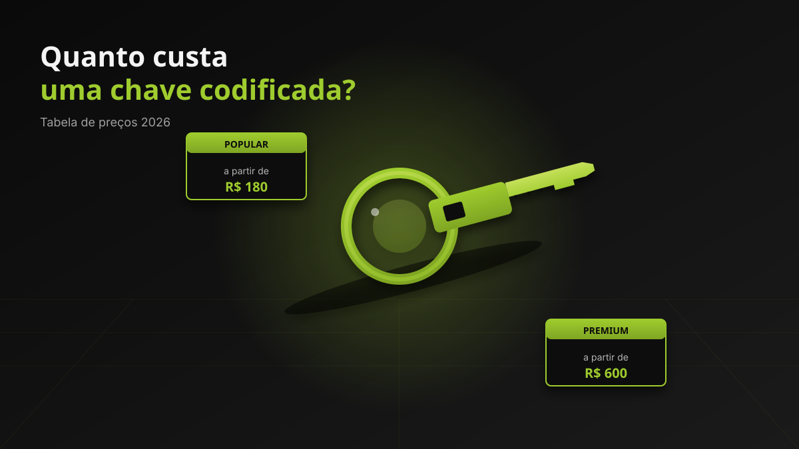

PREÇOS
Quanto custa uma chave codificada em 2026?
Guia completo de preços médios para chave codificada, o que influencia o valor e como evitar surpresas no orçamento.

O que é uma chave codificada
A chave codificada (também chamada de chave transponder) é uma chave que tem um chip eletrônico embutido. Esse chip se comunica com o sistema de imobilizador do veículo — sem a programação correta, o carro não dá partida. Por isso, copiar uma chave codificada exige equipamento de diagnóstico, software específico e conhecimento do modelo.
Faixa de preço em 2026
Os valores variam muito conforme a marca, o modelo e o ano do veículo. Esta é uma referência de mercado atualizada:
| Categoria | Faixa de preço (cópia) | Faixa de preço (perda total) |
|---|---|---|
| Popular (Fiat, VW, Chevrolet) | R$ 180 – R$ 350 | R$ 350 – R$ 700 |
| Intermediário (Hyundai, Toyota, Honda) | R$ 280 – R$ 500 | R$ 500 – R$ 900 |
| Premium (BMW, Mercedes, Audi) | R$ 600 – R$ 1.500 | R$ 1.200 – R$ 3.000+ |
Valores médios de referência no Rio de Janeiro em 2026. O orçamento final depende do modelo exato, do ano e da disponibilidade do chip no mercado.
O que influencia o preço
- Marca e modelo: importados premium têm chaves com criptografia mais complexa e chips mais caros.
- Tipo de chave: chave comum codificada, chave canivete (com botões) e chave de presença (smart key) têm valores diferentes.
- Existência da chave original: copiar uma chave existente é mais barato do que criar uma chave do zero (sem original).
- Ano do veículo: modelos muito recentes podem exigir programação online ou módulos não disponíveis no mercado comum.
- Urgência: atendimentos emergenciais fora do horário comercial podem ter acréscimo.
Cópia vs. chave nova (sem original)
Copiar uma chave existente é mais barato porque a codificação pode ser lida diretamente da original. Criar uma chave sem ter a original exige acesso ao módulo do imobilizador (geralmente via diagnóstico OBD), busca do código do fabricante e, em alguns casos, dessoldar componentes — tudo isso justifica um valor mais alto.
Como evitar pagar mais do que deveria
- Peça sempre o orçamento por escrito (ou por mensagem no WhatsApp) antes de autorizar o serviço.
- Desconfie de preços muito abaixo do mercado: pode significar chip reaproveitado, programação incompleta ou ausência de nota fiscal.
- Confirme a garantia e a nota fiscal: serviços profissionais oferecem ambos.
- Compare pelo menos dois orçamentos quando o valor for alto (acima de R$ 800).
Precisa de orçamento para chave codificada?
Atendimento no Barra Shopping, com nota fiscal e garantia. Ligue ou chame no WhatsApp.
Perguntas frequentes
O seguro do carro cobre chave codificada?
Algumas seguradoras oferecem cobertura para chave perdida ou roubada, geralmente como adicional. Verifique na sua apólice ou com a corretora.
É possível parcelar o pagamento?
Muitos chaveiros aceitam cartão de crédito. No Mário Chaveiro, aceitamos dinheiro, Pix, cartão de débito e crédito. Consulte as condições no atendimento.